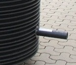

Wählen Sie eine Wasserzählergröße

Wählen Sie das Eingangsventil

Wählen Sie das Ausgangsventil

Wählen Sie die Anzahl der Wasserzähleranlagen

Wählen Sie die PE-Rohr Eingangsgröße

Wählen Sie die PE-Rohr Ausgangsgröße

Wählen Sie die Schachtabdeckung für MEGARIPP

Sechskant-Schlüssel für Schachtabdeckung B125

Information: Wasserzählergrößen
Verfügbare Größen
- 190 mm – Q3 2,5/4, Anschluss 1" (DN 25)
- 260 mm – Q3 6,3/10, Anschluss 5/4" (DN 32)
- 300 mm – Q3 16, Anschluss 6/4" (DN 40)
Technische Daten
- Nenndruck: PN 10 / PN 16 (je nach Armatur)
- Trinkwasserkonform nach DIN 2000 / TrinkwV
- Geeignet für Kalt- und Warmwasser
Die Baulänge des Wasserzählers bestimmt die Konfiguration der gesamten Anlage.
Information: Eingangsventil
Ventiltypen am Eingang
- Kugelhahn – Freistromventil mit vollem Durchgang. Geringer Druckverlust, schnelle Absperrung (90°-Drehung).
- Schrägsitzventil – Klassisches Absperrventil mit schrägem Ventilsitz. Feinfühlige Regelung, bewährt im Trinkwasserbereich.
Material
- Armaturenkörper aus Siliziummessing (Si-Messing) – entzinkungsbeständig
- Trinkwasserzugelassen nach DIN 2000 / TrinkwV
Das Eingangsventil sitzt vor dem Wasserzähler und dient als Hauptabsperrung der Hausanschlussleitung.
Information: Ausgangsventil
Ventiltypen am Ausgang
- Kugelhahn – Freistromventil mit vollem Durchgang für minimalen Druckverlust.
- Schrägsitzventil – Bewährtes Absperrventil mit feinfühliger Regelung.
- KMR – Kugelhahn* – Kegelmembran-Rückflussverhinderer mit Kugelhahn.
- KMR – Schrägsitzventil* – Kegelmembran-Rückflussverhinderer mit Schrägsitzventil.
- KSR-Ventil – Kombinierte Sicherungsarmatur mit Rückflussverhinderer. Prüfbar nach DIN EN 1717.
Hinweis zu KMR-Armaturen
- Enthalten bereits einen integrierten Rückflussverhinderer
- Wartungsintervall: Jährliche Prüfung empfohlen
Das Ausgangsventil sitzt nach dem Wasserzähler. Bei Anlagen mit Rückflussgefahr empfehlen sich KMR- oder KSR-Varianten.
Information: Anzahl der WZ-Anlagen
Konfigurationsmöglichkeiten
- Der MEGARIPP 1000 kann 1 bis 5 Wasserzähleranlagen aufnehmen
- Über 2.200 Konfigurationsvarianten möglich
- Schachtdurchmesser: 1.000 mm, Höhe: 1,50 m bis 6,00 m
Anwendungsbeispiele
- 1 Anlage – Einfamilienhaus, Einzelanschluss
- 2 Anlagen – Zweifamilienhaus, Haus + Garten
- 3–5 Anlagen – Mehrfamilienhaus, Gewerbe, getrennte Versorgungsbereiche
Jede Anlage besteht aus Eingangsventil, Passtück und Ausgangsventil. Alle Anlagen werden unabhängig voneinander im Schacht montiert. Der Wasserzähler wird vom Versorger gestellt.
Information: PE-Rohr Eingangsgröße
Verfügbare PE-Rohr-Größen
- PE d32 – Standard für Einzelanschlüsse (1")
- PE d40 – Für größere Durchflussmengen (5/4")
- PE d50 – Mehrfamilienhäuser, Gewerbe (6/4")
- PE d63 – Großanschlüsse (2")
Technische Details
- Material: PE-HD (Hochdruck-Polyethylen) nach DIN 8074/8075
- Für Trinkwasser zugelassen
Die Eingangsgröße richtet sich nach dem verlegten Hausanschlussrohr. Prüfen Sie den Durchmesser Ihrer vorhandenen PE-Leitung.
Information: PE-Rohr Ausgangsgröße
Verfügbare PE-Rohr-Größen
- PE d32 – Standard für Hausinstallation (1")
- PE d40 – Für größere Durchflussmengen (5/4")
- PE d50 – Mehrfamilienhäuser, Gewerbe (6/4")
- PE d63 – Großanschlüsse (2")
Technische Details
- Material: PE-HD (Hochdruck-Polyethylen) nach DIN 8074/8075
- Eingangs- und Ausgangsgröße können unterschiedlich gewählt werden
Die Ausgangsgröße richtet sich nach der weiterführenden Hausinstallation. Eingangs- und Ausgangsrohr müssen nicht identisch sein.
Information: Schachtabdeckung
Optionen
- Schachtabdeckung B125 – Belastungsklasse B125 (12,5 Tonnen). Geeignet für Gehwege, Einfahrten und Grünflächen. Verschluss mit Sechskantschlüssel SW24.
- Betonauflagering DN625 – Aufsatzring für den Einbau in bestehende Betonschächte oder bei erdverlegten Installationen mit separatem Deckel.
- Keine Auswahl – Wenn bereits eine vorhandene Abdeckung genutzt wird.
Einbauhinweis
- Schachtdurchmesser MEGARIPP: DN 1000 (1.000 mm)
- B125-Abdeckung: Verschluss gegen unbefugten Zugriff
Die B125-Abdeckung wird mit einem Sechskantschlüssel SW24 geöffnet (separat im nächsten Schritt wählbar).
Information: Sechskantschlüssel
Sechskantschlüssel SW24
- Artikelnummer: 0398001
- Passend für Schachtabdeckung B125 des MEGARIPP
- Schlüsselweite: SW24
Bedienung
- Öffnen: Schlüssel einsetzen, gegen den Uhrzeigersinn drehen
- Schließen: Deckel auflegen, im Uhrzeigersinn verriegeln
Der Schlüssel wird nur benötigt, wenn Sie im vorherigen Schritt die Schachtabdeckung B125 gewählt haben.